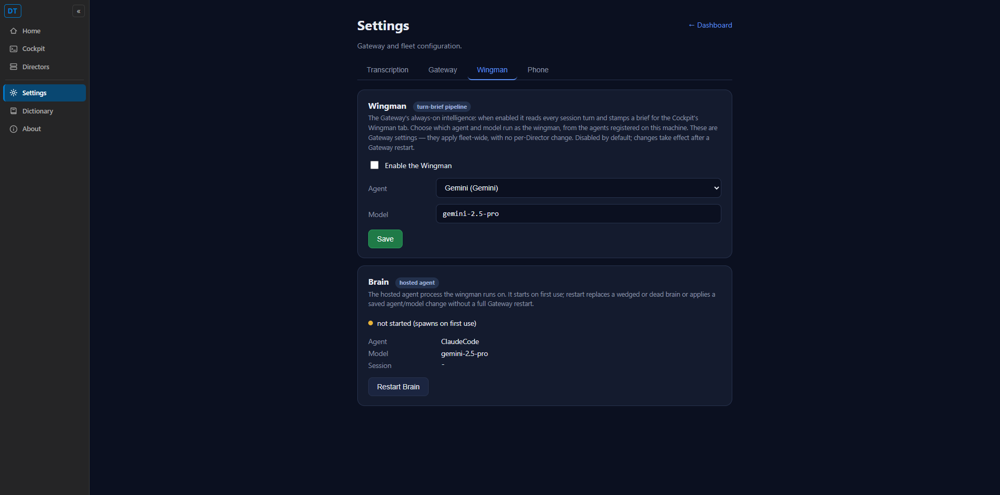

After saving an agent plus a model (for example Gemini + gemini-2.5-pro) and reloading the
Wingman settings tab, the agent dropdown correctly pre-selected the saved agent, but the
Model field showed the running brain's model (opus) instead of the saved
model. Acceptance criterion 3 requires that reloading shows BOTH the saved agent AND the saved model.
Root cause: the brain block of GET /gateway/settings sourced the model from
the running brain (host.BrainModel, fixed at GatewayHost construction) rather than the saved
brain_model in config.json. So a freshly-saved model was persisted to disk but never reflected
back to the page on reload, even though the agent id already read from the saved config
(brain_agent_id).
| File | Change |
|---|---|
src/CcDirector.Gateway/Api/SettingsEndpoints.cs |
In BrainBlockAsync, the GET now returns the SAVED model via
BrainModelConfig.Get() (reads config.json brain_model, the same value the
PUT writes) instead of host.BrainModel. The Model field now round-trips on reload,
consistent with how the agent id already does. No-fallback preserved: BrainModelConfig.Get()
returns the documented default when the key is absent and throws on a malformed value - it never
silently masks a bad config. |
src/CcDirector.Gateway.Tests/BrainConfigEndpointTests.cs |
The round-trip regression test (Put_brain_config_by_agent_id_persists_and_round_trips)
now asserts the GET returns the SAVED model ("sonnet") after a save, not
BrainModelConfig.Default. The prior assertion encoded the exact defect. |
The Cockpit page needed no change: settings.html already binds the Model field to the GET's
brain.model (brainmodelsel.value = b.model), so surfacing the saved model at the
source fixes the reload without touching the client.
| # | Criterion | Result | Evidence |
|---|---|---|---|
| 1 | Label reads "Agent"; word "Tool" no longer on the tab | PASS | Live page: tab text contains no Tool token; screenshot shows "Agent" + "Brain" rows. |
| 2 | Dropdown lists every registered machine agent | PASS | Live GET returned 5 agents: Claude Code, Pi, Codex, Gemini, OpenCode. |
| 3 | Save stores both; reload shows the saved agent AND model | PASS | After saving Gemini + gemini-2.5-pro, a fresh reload shows the picker = Gemini AND
Model = gemini-2.5-pro (was opus before the fix). Screenshot below. |
| 4 | Saved choice written to gateway config | PASS | config.json held brain_agent_id, brain_tool=Gemini,
brain_model=gemini-2.5-pro; the GET reflected the saved values. |
A real CcDirector.Gateway.GatewayHost was booted in-process on an isolated config root
(auth disabled, ephemeral port) and the REAL unmodified Cockpit settings.html was driven
same-origin against it (a static+reverse-proxy server served the shipped wwwroot and forwarded
/gateway/* to the live Gateway). The page's own relative fetches exercised the production
endpoints.
Step 1 - initial GET (defaults):
tool=ClaudeCode agentId=null model=opus agents=[Claude Code, Pi, Codex, Gemini, OpenCode]
Step 2 - PUT /gateway/brain/config (Gemini + gemini-2.5-pro):
{"agentId":"1378a0d5-...","tool":"Gemini","model":"gemini-2.5-pro"}
Step 3 - reload GET (the fix):
agentId=1378a0d5-... model=gemini-2.5-pro <-- saved model now round-trips (was opus before)
config.json on disk:
brain_agent_id = 1378a0d5-... brain_tool = Gemini brain_model = gemini-2.5-pro
Screenshot - real Wingman tab after a fresh reload: picker = Gemini, Model = gemini-2.5-pro.

dotnet build cc-director.sln -> Build succeeded. 0 Warning(s) 0 Error(s) BrainConfigEndpointTests -> Passed! 6 / 6 BrainModelConfigTests -> Passed! 5 / 5
No architecture or security drift: no container/component added or removed; the same loopback REST
behind the same token middleware; input still validated; the no-fallback rule is preserved
(BrainModelConfig.Get throws on a malformed value). No docs/cencon/ content change
warranted.
I believe this is finished. The saved Wingman model round-trips on reload; all four acceptance criteria pass against the real GatewayHost serving the real Cockpit page.